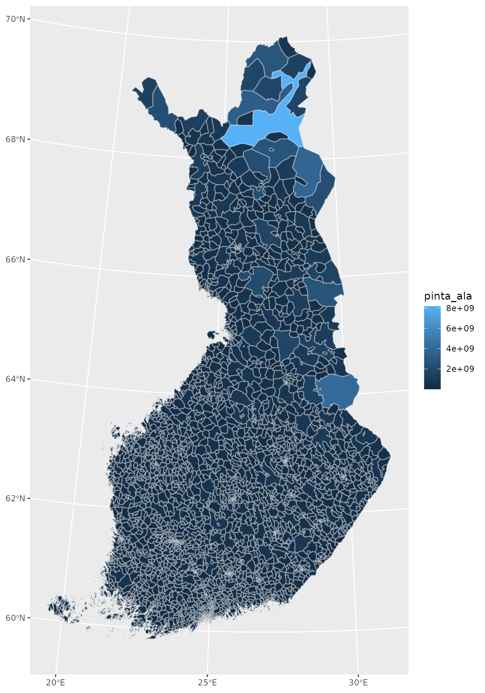
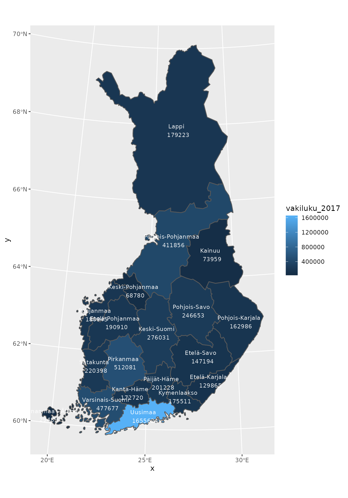
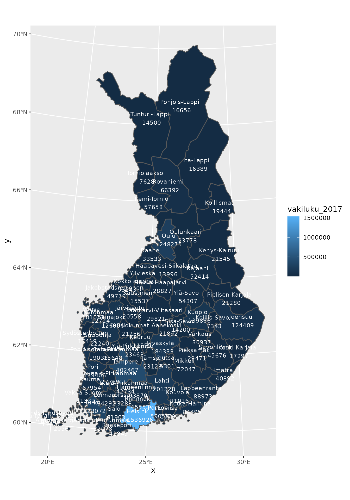
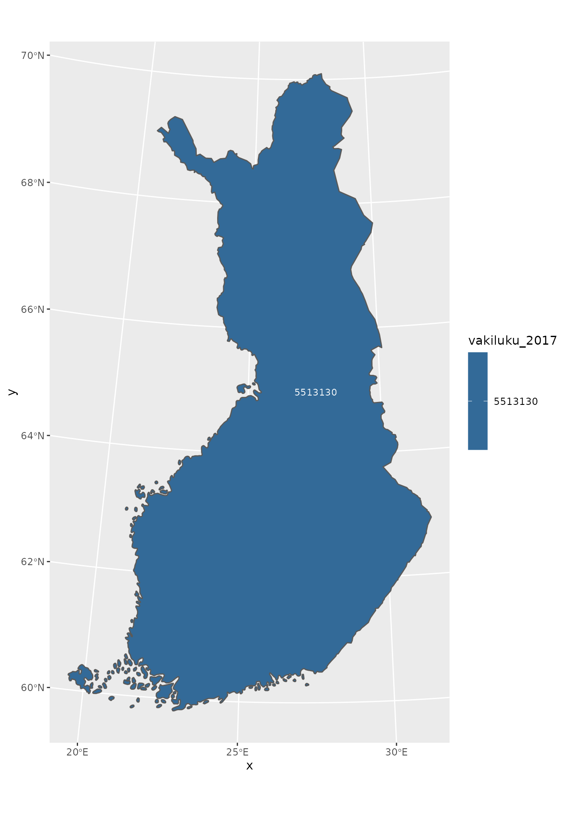

vignettes/geofi_joining_attribute_data.Rmd
geofi_joining_attribute_data.RmdInstallation
geofi is not yet in CRAN, but can be installed from Github using
remotes::install_github("ropengov/geofi")This vignettes gives an overview of different options for creating maps in R using the data from geofi-package. Vignette is divided in two sections: Statics maps and interactive maps.
You can add variables from Paavo data (Statistics Finland) in following manner.
library(pxweb)
# lets get all zipcodes and all variables
pxweb_query_list <-
list("Postinumeroalue"=c("*"),
"Tiedot"=c("*"))
# Download data
px_data <-
pxweb_get(url = "http://pxnet2.stat.fi/PXWeb/api/v1/fi/Postinumeroalueittainen_avoin_tieto/2019/paavo_1_he_2019.px",
query = pxweb_query_list)
# Convert to data.frame
tk_data_zip <- as.data.frame(px_data, column.name.type = "text", variable.value.type = "text")
library(dplyr)
library(tidyr)
tk_data_zip2 <- tk_data_zip %>%
as_tibble() %>%
setNames(c("region","indicator","value")) %>%
spread(indicator, value)
tk_zipdata <- janitor::clean_names(tk_data_zip2)
tk_zipdata$zipcode <- substr(x = tk_zipdata$region, start = 1, stop = 5)
tk_zipdata$zipname <- gsub("^.{6}", "", tk_zipdata$region)
# Lets join with spatial data and plot the area of each zipcode
zipcodes19 <- get_zipcodes(year = 2019)
zipcodes_new <- left_join(zipcodes19, tk_zipdata, by = c("posti_alue" = "zipcode"))
ggplot(zipcodes_new) +
geom_sf(aes(fill = pinta_ala), color = alpha("white", 1/3))
municipalities17 <- get_municipalities(year = 2017)
# pull municipality data from Statistics Finland
library(pxweb)
pxweb_query_list <-
list("Alue 2019"=c("*"),
"Tiedot"=c("M408","M411","M476","M391","M421","M478","M404","M410","M303","M297","M302","M44","M62","M70","M488","M486","M137","M140","M130","M162","M78","M485","M152","M72","M84","M106","M151","M499","M496","M495","M497","M498"),
"Vuosi"=c("2017"))
px_data <-
pxweb_get(url = "http://pxnet2.stat.fi/PXWeb/api/v1/fi/Kuntien_avainluvut/2019/kuntien_avainluvut_2019_aikasarja.px",
query = pxweb_query_list)
# Convert to data.frame
tk_data <- as.data.frame(px_data, column.name.type = "text", variable.value.type = "text")
tk_data2 <- tk_data %>%
rename(name = `Alue 2019`) %>%
mutate(name = as.character(name),
# Paste Tiedot and Vuosi
Tiedot = paste(Tiedot, Vuosi)) %>%
select(-Vuosi) %>%
spread(Tiedot, `Kuntien avainluvut`) %>%
as_tibble()
tk_data3 <- janitor::clean_names(tk_data2)
# Join with Statistics Finland attribute data
dat <- left_join(municipalities17, tk_data3)
dat[1:10,1:10]
#> Simple feature collection with 10 features and 10 fields
#> geometry type: MULTIPOLYGON
#> dimension: XY
#> bbox: xmin: 83747.59 ymin: 6690809 xmax: 610975.5 ymax: 7133254
#> projected CRS: ETRS89 / TM35FIN(E,N)
#> gml_id vuosi kunta nimi namn name
#> 1 kunta4500k_2017.1 2017 5 Alajärvi Alajärvi Alajärvi
#> 2 kunta4500k_2017.2 2017 9 Alavieska Alavieska Alavieska
#> 3 kunta4500k_2017.3 2017 10 Alavus Alavus Alavus
#> 4 kunta4500k_2017.4 2017 16 Asikkala Asikkala Asikkala
#> 5 kunta4500k_2017.5 2017 18 Askola Askola Askola
#> 6 kunta4500k_2017.6 2017 19 Aura Aura Aura
#> 7 kunta4500k_2017.7 2017 20 Akaa Akaa Akaa
#> 8 kunta4500k_2017.8 2017 35 Brändö Brändö Brändö
#> 9 kunta4500k_2017.9 2017 43 Eckerö Eckerö Eckerö
#> 10 kunta4500k_2017.10 2017 46 Enonkoski Enonkoski Enonkoski
#> municipality_name_fi municipality_name_sv municipality_name_en
#> 1 Alajärvi Alajärvi Alajärvi
#> 2 Alavieska Alavieska Alavieska
#> 3 Alavus Alavus Alavus
#> 4 Asikkala Asikkala Asikkala
#> 5 Askola Askola Askola
#> 6 Aura Aura Aura
#> 7 Akaa Akaa Akaa
#> 8 Brändö Brändö Brändö
#> 9 Eckerö Eckerö Eckerö
#> 10 Enonkoski Enonkoski Enonkoski
#> kuntaryhmitys_code geom
#> 1 2 MULTIPOLYGON (((348733.2 69...
#> 2 3 MULTIPOLYGON (((370424.7 71...
#> 3 3 MULTIPOLYGON (((317245.3 69...
#> 4 2 MULTIPOLYGON (((434407.9 67...
#> 5 3 MULTIPOLYGON (((423421.8 67...
#> 6 3 MULTIPOLYGON (((255415.5 67...
#> 7 2 MULTIPOLYGON (((324952.6 67...
#> 8 3 MULTIPOLYGON (((176037.2 67...
#> 9 3 MULTIPOLYGON (((86806.42 66...
#> 10 3 MULTIPOLYGON (((598384.5 68...
# Lets aggregate at maakunta level using column mk_name
mk_data <- dat %>%
group_by(maakunta_name_fi,maakunta_code) %>%
# And compute population at maakunta level
summarise(vakiluku_2017 = sum(vakiluku_2017))
ggplot(mk_data) +
geom_sf(aes(fill = vakiluku_2017)) +
geom_sf_text(aes(label = paste(maakunta_name_fi, "\n",vakiluku_2017)),
size = 3,
color = "white")
Or if you prefer aggregating at seutukunta-level you can
mk_data <- dat %>%
group_by(seutukunta_code,seutukunta_name_fi) %>%
# And compute population at maakunta level
summarise(vakiluku_2017 = sum(vakiluku_2017))
ggplot(mk_data) +
geom_sf(aes(fill = vakiluku_2017)) +
geom_sf_text(aes(label = paste(seutukunta_name_fi, "\n",vakiluku_2017)),
size = 3,
color = "white")
Or if you want the population at the national level aggregated up from municipality level you can:
mk_data <- dat %>%
summarise(vakiluku_2017 = sum(vakiluku_2017))
ggplot(mk_data) +
geom_sf(aes(fill = vakiluku_2017)) +
geom_sf_text(aes(label = vakiluku_2017),
size = 3,
color = "white")